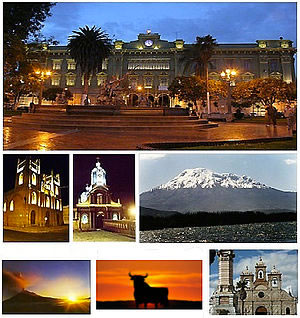

RIOBAMBA
Riobamba es una ciudad de Ecuador,conocida también como: “Sultana de los Andes”, , “Ciudad de las Primicias”, “Corazón de la Patria” , por su historia y belleza, es la capital de la provincia de Chimborazo.
Se encuentra en el centro geográfico del país, en la cordillera de los Andes, a 2.754 msnm cerca de diversos volcanes, como el Chimborazo, el Tungurahua, el Altar y el Carihuairazo.
La ciudad fue fundada en 1534 cerca de la laguna de Colta. En 1799 se trasladó hasta el lugar que ocupa hoy en día, convirtiéndose en la primera y única ciudad planificada del Ecuador.
Durante un breve período, tras la fundación de la República del Ecuador, fue la capital del país.

Atractivos Cantón Riobamba
Lagunas de Atillo o Colay
Basílica del Sagrado Corazón de Jesús
Parque Maldonado
Volcán Chimborazo
Parque Sucre
Catedral de Riobamba
Desierto de Palmira
Tren Ruta: Riobamba - Nariz del Diablo - Riobamba
Pueblo Indígena Puruhá
Punín
Museo del Convento de la Concepción
Museo del Banco Central
Edificio del Colegio Maldonado
Parque Guayaquil
Parque 21 de Abril
La Laguna Negra
Volcán Carihuairazo
Iglesia de San Alfonso
Iglesia de La Merced
Iglesia de La Concepción
Lagunas de el Altar
Lagunas de Ozogoche
Parque Nacional Sangay
Reserva Faunística El Chimborazo
Volcán El Altar